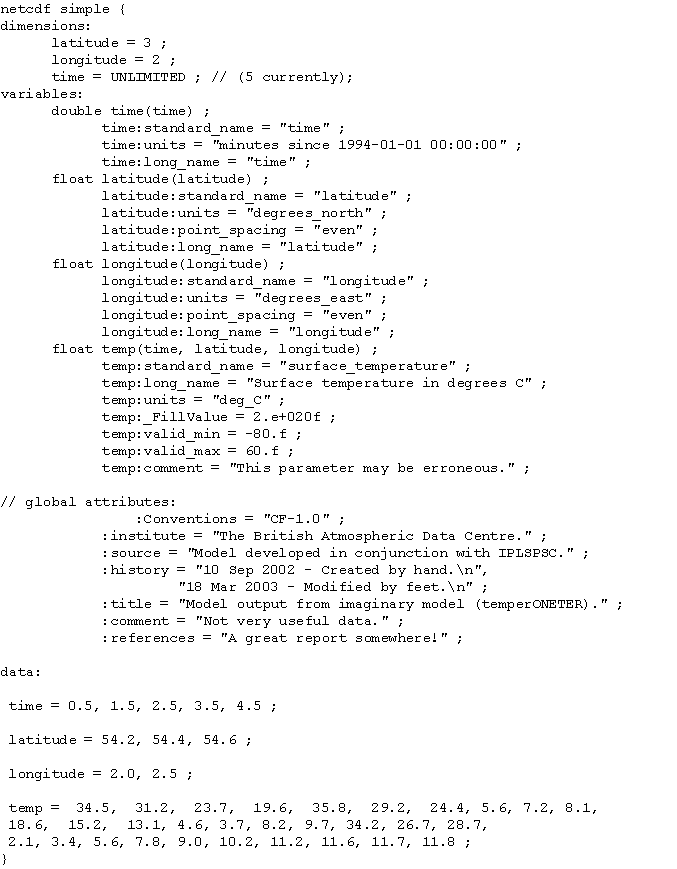

A simple netCDF file is created, and a description of the various elements in the file is given.
However, we can start with a very simple example as shown in the figure. The description of the file gives a brief overview of the basic concepts of netCDF.

The CDL representation of the netCDF file simple.nc (shown in the figure) can be downloaded from http://badc.nerc.ac.uk/help/formats/netcdf/simple.cdl The simple.nc file can also be retrieved. This will allow you to experiment with the ncgen and ncdump utilities. Most data types are permitted by netCDF.
The format is relatively self-explanatory with the header section giving the name of the netCDF file that corresponds to the CDL file. The rest of the file is then enclosed in curly braces {}.
The next section outlines the number of points in each dimension, in this case we have longitude (lon), latitude (lat) and time. Since this is a simple file there are only 2 x 3 grid-points in the spatial domain, and the time axis. The option 'time = UNLIMITED ;' demonstrates that one variable can be recorded as 'unlimited' allowing further additions to the file in the future.
The variables section defines each of the dimensions in full, including attributes relating to each of them. You can include any attributes you wish but there are conventions for many of them. The final variable in this case is the independent variable that we are interested in, 'Surface temperature in degrees C' abbreviates to 'temp'. The final 'f' on the temp:valid_min and temp:valid_max values shows that the numbers are floating-point numbers.
You can include as many global attributes as you wish. The CF conventions defining these should be followed.
The final section is the actual data itself. First the data related to the dimensions are specified. In this case there are 2 x 3 points in longitude and latitude, and there are 5 time steps (in units of 'days since 1994-01-01 00:00:00'). Finally, the temperature values themselves follow in the array (time, lat, long), with the last index (long) varying first (so temp for (0.5, 54.2, 2.0) is followed by temp for (0.5, 54.2, 2.5), and so on).
The file can be saved as 'simple.cdl' in a directory that you are going to use for experimentation. This directory is shown as 'your_directory' (ending in '/' for Unix/Linux or '\' for Windows) in the example of using ncgen and ncdump.